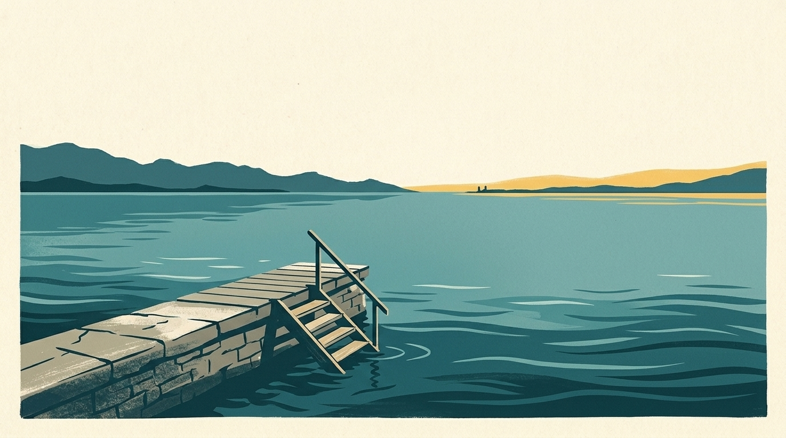

Kurz gesagt
Das ist unser Vorschlag in vier Stufen, gebaut auf den Regeln der Quellen: mit wenigen Sekunden beginnen (Helsana), langsam einsteigen, nie mehr Minuten im Wasser bleiben, als das Wasser Grad hat (SLRG), in Begleitung gehen. Es ist ein Rahmen der Vorsicht, kein medizinisches Protokoll und kein Erfolgsversprechen: Wer ein Gesundheitsproblem hat, spricht zuerst mit der Ärztin oder dem Arzt.
Die Regeln, die den Rahmen setzen
- Zeitgrenze: so viele Minuten, wie das Wasser Grad hat (5 Minuten bei 5 °C), und zwar als Höchstwert, nicht als Ziel (SLRG, Helsana).
- Klein anfangen: Am Anfang genügen wenige Sekunden; man steigert sich mit der Zeit (Helsana).
- Langsam einsteigen, den Körper nach und nach benetzen, den Kopf nicht eintauchen (Helsana, SLRG).
- Nie allein: Eine zweite Person kommt mit (Helsana).
- Schon im Sommer gewöhnen: Regelmässiges Baden im Freien vor dem Herbst gewöhnt den Körper an tiefere Temperaturen (Helsana).
- Keine Anfänger unter 12 °C, auch nicht im Neoprenanzug: Er verhindert weder Kälteschock noch Unterkühlung (RLSS, Grossbritannien).
Woche 1: ans Wasser gewöhnen
Zwei bis drei Ausflüge. Bis zu den Knien, dann bis zur Hüfte hineingehen, einige Sekunden lang, ohne zu tauchen. Hinausgehen, bevor man richtig friert. Ziel: dass der Atemreflex (siehe Artikel) weniger überrascht.
Woche 2: bis zu den Schultern
Langsam bis zu den Schultern einsteigen, Kopf über Wasser, einige Dutzend Sekunden bis eine Minute. Dort bleiben, wo man stehen kann, und warten, bis sich die Atmung beruhigt hat, bevor man die Arme bewegt.
Woche 3: einige Minuten, mit Vorsicht
Auf ein bis zwei Minuten steigern, dann drei, wenn das Wasser es erlaubt. Die aktuelle Temperatur vor dem Einstieg prüfen: Die Obergrenze der Regel sinkt mit dem Wasser. Für Frauen berichtet Helsana, Fachleute empfählen sanftere Varianten, eine bis drei Minuten in Wasser von 10 bis 12 °C, vor allem in der zweiten Zyklushälfte.
Woche 4: die Routine festigen
Unter der Obergrenze der Regel bleiben, besser deutlich darunter. Einen Badeplatz wählen, an dem man leicht hinauskommt und sich geschützt umziehen kann, mit derselben Person kommen und das Aufwärmen und die Ausrüstung vor dem Einstieg einplanen.
Wann man aufhört oder verzichtet
Man geht hinaus, sobald man sich unwohl fühlt. Graubünden Ferien rät bei Bluthochdruck, Diabetes sowie Herz- und Gefässerkrankungen vom Eisbaden ab; Helsana empfiehlt, bei gesundheitlichen Problemen oder Unsicherheit darauf zu verzichten oder es ärztlich abklären zu lassen. Zum Einordnen der Studien: die Wirkung von Kaltbaden.
Das Wasser von heute, Badeplatz für Badeplatz, steht in der App.
Das Wasser des Sees im Moment
Die Wassertemperatur jedes Badeplatzes steht in der App Mein See, alle drei Stunden aktualisiert.
Hinweis. Dieser Artikel gibt allgemeine Informationen aus den genannten Quellen wieder; er ersetzt keinen ärztlichen Rat. Baden in kaltem Wasser belastet das Herz stark und kann gefährlich sein: Lass dich vor dem Beginn von einer Ärztin oder einem Arzt beraten, besonders bei Herzproblemen, Bluthochdruck oder Schwangerschaft. Geh nie allein ins Wasser und befolge die Anweisungen der Rettungsschwimmer. Du badest auf eigene Verantwortung; im Notfall wähle in der Schweiz die 144 oder die 112.